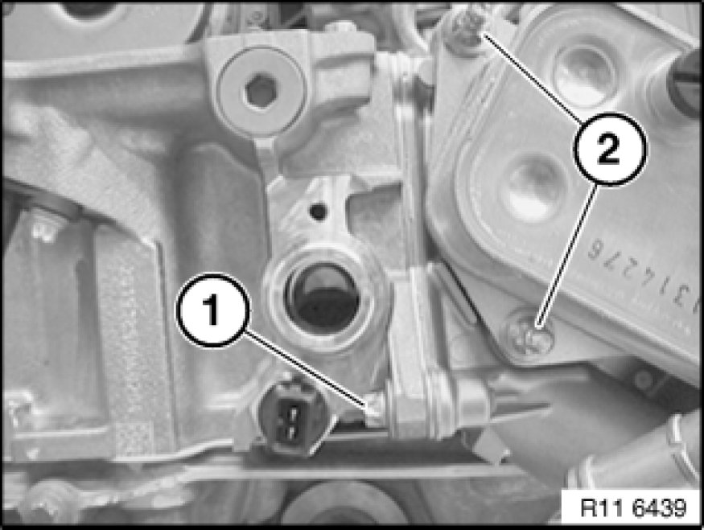
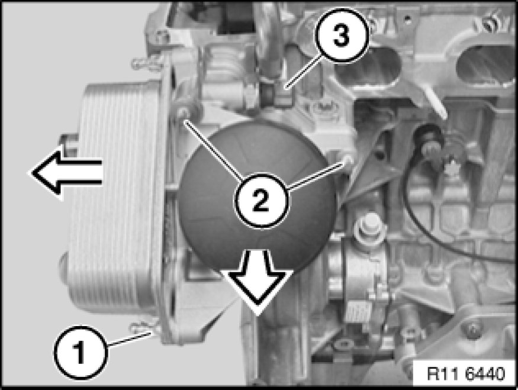

Removing and Installing/Replacing Full-Flow Oil Filter
11 42 020 - Removing and installing/replacing fullflow oil filter (N52)

Warning!
Danger of scalding!
Only perform these tasks on an engine that has cooled down.

Recycling:
Catch and dispose of drained coolant.
Observe country-specific waste-disposal regulations.

Necessary preliminary tasks:
- Drain coolant Service and Repair.
- Remove intake air manifold Service and Repair.
- Unfasten oil filter cover.
- Protect drive belt against dirt.

Release screw (1).
Tightening torque: 11 42 2AZ. 11 42 Oil Filter Element with Connections

Unfasten screws (2).
Note:
Have cleaning cloth ready to catch residual oil.
Tightening torque: 11 42 2AZ. 11 42 Oil Filter Element with Connections
Installation Note:
Replace all seals.
If necessary, replace filter element.

Assemble engine.
Note:
Protect drive belt against dirt.
Installation Note:
Venting instructions 17 00 039 Venting Cooling System and Checking For Leaks must be observed without fail.